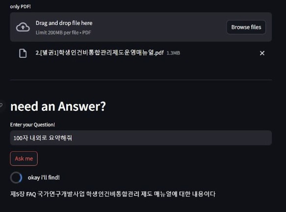

문서를 질문의 대상으로
PDF 문서를 대상으로 질문하는 PDF Chat과 ChatGPT·Llama 계열 모델 기반 챗봇 프로토타입을 구현했습니다. 문서에서 필요한 정보를 확인하는 인터페이스와 언어모델 응용을 경험했습니다.
문서와 이미지에서 텍스트 확보
Tesseract OCR을 연동해 문서·이미지의 텍스트와 데이터를 추출하는 작업을 수행했습니다. 이 경험은 스피칭 트레이너의 PaddleOCR 기반 발표자료 분석으로도 이어졌습니다.
PDF에 질문하는 챗봇과 OCR을 통해 문서 속 정보를 꺼내 쓰는 인터페이스를 구현했습니다.
구현·활용 경험
PDF 문서를 대상으로 질문하는 PDF Chat과 ChatGPT·Llama 계열 모델 기반 챗봇 프로토타입을 구현했습니다. 문서에서 필요한 정보를 확인하는 인터페이스와 언어모델 응용을 경험했습니다.
Tesseract OCR을 연동해 문서·이미지의 텍스트와 데이터를 추출하는 작업을 수행했습니다. 이 경험은 스피칭 트레이너의 PaddleOCR 기반 발표자료 분석으로도 이어졌습니다.